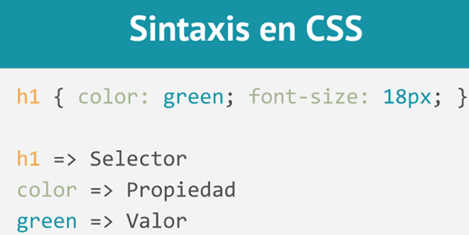

Sintaxis CSS
Se compone de sentencias en las que se establece un atributo de estilo y un valor para el mismo, ambas separadas por el signo de dos puntos ":".
Estas sentencias se aplican a las etiquetas HTML estableciendo características propias de su aspecto. Dentro de sus usos distinguimos entre especificación interna y especificación externa.

La propiedad y el valor se escriben separados por dos puntos, el valor indicado siempre depende de la propiedad elegida. Algunas propiedades requieren una medida de longitud, otras una indicación de color; adicionalmente existen palabras claves previamente definidas tales como "Left" y "Rigth".